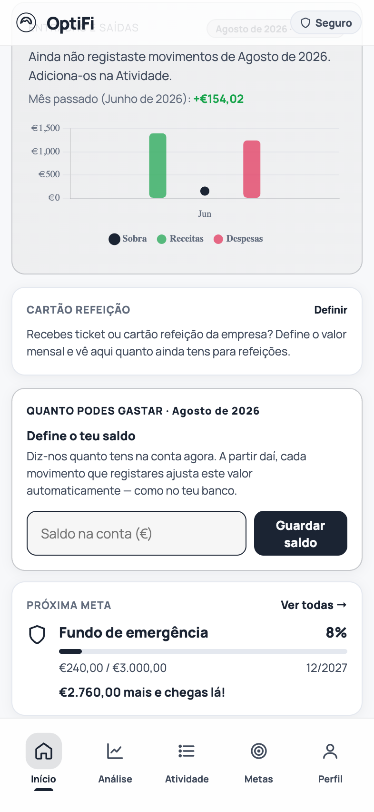
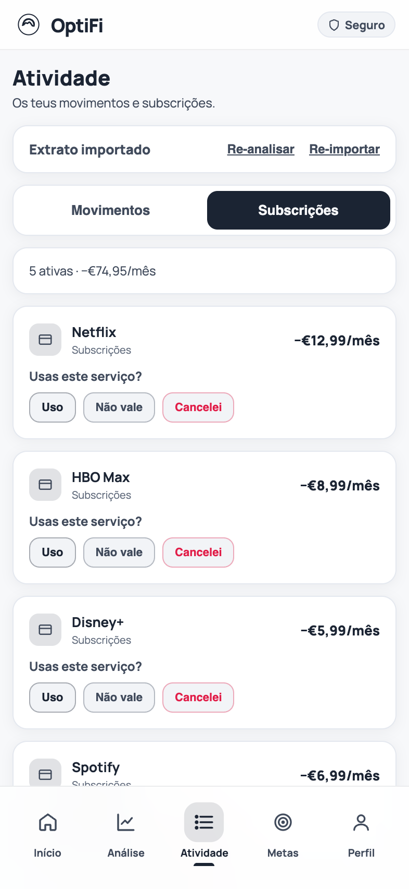
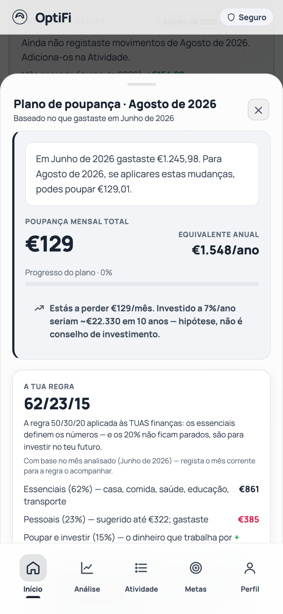

Quanto podes gastar
O saldo deixa de ser um número sem contexto
A OptiFi cruza o que entrou, o que saiu e o que já reservaste para as metas, e responde à única pergunta que importa a meio do mês: quanto é que posso gastar sem estragar nada?
- Ritmo seguro por semana e por dia, atualizado a cada movimento que registas.
- Entradas e saídas do mês em curso comparadas com o mês fechado.
- Cartão refeição contado à parte do saldo da conta.

Subscrições
As que continuas a pagar sem dar por isso
A app apanha as cobranças que se repetem todos os meses, mostra-te o total e pergunta uma coisa de cada vez: ainda usas? Cancelaste? O plano mais barato serve?
- Deteção automática pelo padrão de cobrança, não por uma lista fixa de serviços.
- Alternativas honestas: plano mais barato, partilha ou opção gratuita, com o preço de referência à vista.
- Cancelaste? O valor sai das contas do mês seguinte automaticamente.

Plano de poupança
Um plano com números, não com boas intenções
A partir do mês que analisaste, a OptiFi monta uma lista de cortes possíveis, cada um com o valor que liberta por mês — e mostra-te o equivalente anual, para veres o peso real da decisão.
- Cortes ordenados pelo que rendem, com o cálculo explicado em cada linha.
- Regra 50/30/20 aplicada aos teus números, não a uma média nacional.
- Marcas o que já fizeste e o plano reajusta-se.

Metas
Poupar deixa de ser o que sobra ao fim do mês
Defines quanto reservas por mês para cada meta e esse dinheiro sai do "livre para gastar". A app diz-te, ao ritmo atual, em que mês é que lá chegas.
- Projeção honesta: a data a que chegas, mesmo quando é depois do alvo.
- Lembrete da transferência real — a app não mexe no teu dinheiro.
- Levantar de uma meta é um passo assumido, com registo.
Como funciona
Três passos, cerca de um minuto por mês
Não há sincronizações a correr em segundo plano nem robôs a adivinhar o teu futuro. És tu que dás o extrato; a app faz as contas.
Descarrega o extrato
CSV, XLSX ou PDF do teu banco — Revolut, CGD, Millennium, Santander e por aí fora. Um ficheiro, um mês.
A OptiFi lê e organiza
Reconhece o formato sozinha, categoriza os movimentos, separa as transferências e apanha as subscrições.
Segue o plano
Vês quanto podes cortar, quanto podes gastar por semana e o que isso faz às tuas metas. Repetes no mês seguinte.
Privacidade
O teu extrato é teu
Uma app de finanças pessoais vive da confiança. Estas são as regras — as mesmas que estão na política de privacidade, sem letra pequena.
Nunca pedimos credenciais do banco
Não há Open Banking nem acesso à tua conta. Só o ficheiro que tu carregas.
O ficheiro é descartado
Depois de lido, guardamos apenas os movimentos estruturados — data, descritivo, valor e categoria.
Servidores na UE
Base de dados na região de Frankfurt, com subcontratantes ao abrigo do RGPD.
Sem publicidade e sem venda de dados
Não criamos perfis para terceiros. Exportas tudo ou apagas a conta quando quiseres.
Perguntas frequentes
O que costumam perguntar antes de entrar
Preciso de dar acesso ao meu banco?
Não. A OptiFi nunca se liga à tua conta bancária nem pede credenciais. Descarregas o extrato do homebanking e carrega-lo na app — é o mesmo ficheiro que já podes abrir no Excel.
Que bancos é que funcionam?
O leitor identifica o formato pelo conteúdo do ficheiro, não pelo nome do banco. Está testado com Revolut, Caixa Geral de Depósitos, Millennium BCP, Santander e corretoras como a Trade Republic ou a Trading 212, e aceita CSV, XLSX e PDF.
De onde vêm os valores que a app mostra?
De cálculo determinístico sobre os teus movimentos: soma de entradas e saídas, deteção de cobranças repetidas, comparação com o preço público dos planos das subscrições. Cada cartão explica a conta que fez — e nenhuma sugestão é conselho de investimento.
E se quiser sair?
Exportas tudo em JSON e apagas a conta a partir do Perfil. O apagamento é imediato e irreversível, sem pedidos por email nem períodos de espera.
Quanto custa?
A OptiFi está em beta fechado e é gratuita para quem entra nesta fase. Sem cartão, sem publicidade e sem venda de dados.
Começa pelo mês passado
Um extrato chega para veres o que se passou e quanto podias ter poupado. Se não gostares do que vês, apagas a conta em dois toques.